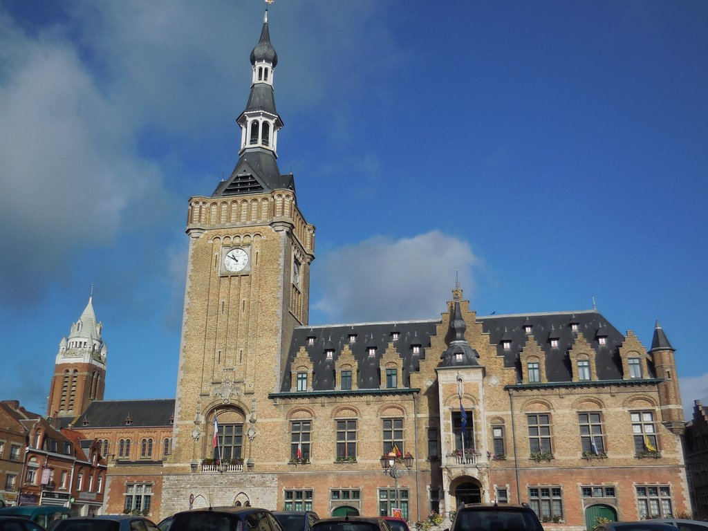

Le Bailleul: L'histoire derrière ce bien
Le Bailleul est une propriété exceptionnelle qui a une histoire riche et fascinante. Située dans un cadre idyllique, cette propriété a été le témoin de nombreux événements historiques et a accueilli des personnalités importantes au fil des ans. Cet article explore l'histoire de Le Bailleul, depuis sa construction jusqu'à nos jours.
Nous plongeons dans les archives pour découvrir les propriétaires précédents, les rénovations qu'elle a subies, et les histoires intrigantes associées à cette demeure. Découvrez comment Le Bailleul est devenu un symbole de patrimoine et de luxe, et pourquoi il continue d'attirer l'attention des acheteurs du monde entier.